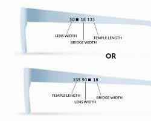

Frame Measurements
Last Updated: June 2026
When you're looking to buy new glasses online, or even just curious about your current pair, knowing your frame measurements is essential. These numbers tell you the size and fit of your glasses, ensuring comfort and proper vision.
Most glasses frames have these measurements printed on the inside of the temples (the arms of the glasses) or on the bridge (the part that rests on your nose). They usually appear as a series of three numbers, sometimes separated by a square or a dash.
Finding the numbers on your glasses is usually quite simple once you know where to look. As mentioned, they are almost always located on the inside of the temple arm (the part that goes over your ear).
Understanding Frame Dimensions
You will typically find a series of three numbers printed there, looking something like this: 50 □ 18 135. These numbers represent the exact millimeter measurements of your frames.

Figure 1: Typical frame sizing configuration found on the inner arm.
Our built-in AI Frame Verification will automatically scan these parameters when you take a photo to list your glasses, but you can also cross-reference them manually using our dimension guide below to ensure a perfect match for buyers.
Here's the key to understanding the string of numbers
- The first number (e.g. 50) is the lens width.
- The second number (e.g. 18) is the bridge width.
- The third number (e.g. 135) is the temple length.
What the Numbers Mean: Let's break down what each number represents:
50mm
18mm
135mm
Figure 2: Physical locations and example measurements for Lens Width, Bridge Width, and Temple Length.
If the numbers have worn off over time due to wear and tear, you can use a millimeter ruler to measure them yourself! Just measure the width of one lens, the distance across the bridge, and the total length of the arm from the hinge to the tip.
- Measuring Lens Width
- Measuring Bridge Width
- Measuring Temple (Arm) Length
- Measuring Lens Height (Optional)
Place your ruler at the widest part of one lens. Measure horizontally from the inside edge of the frame to the other inside edge of the same lens.
Measure the distance between the two lenses. Start from the inner edge of one lens and measure across to the inner edge of the opposite lens. This is the gap that sits over your nose.
This is a two-part measurement if your glasses curve behind the ear. Measure from the hinge (where the arm connects to the front) to the point where the arm begins to curve, then measure the curved part. Add them together for the total length. Alternatively, you can lay the arm flat against the ruler to get the total length from hinge to tip.
While not usually printed on the frame, this is helpful for progressive lenses. Measure vertically from the top inner edge of the lens to the bottom inner edge.
If you have questions regarding any aspect of Squinted, reach out to the Squinted Team at hello@squinted.co.uk.